Pattern Library

Developer
2018-Present
HTML, CSS, SASS, JavaScript, JQuery
The purpose in pursuing this project is to help others. My main goal on a daily basis is to keep a helpful attitude throughout the day. This library will not only help out individual developers, teams, and projects but it will help the company on a much larger scale.
Not only am I helping out the company but this is a great opportunity to expand my skills and grow as a designer and developer. Learning how to code these components helps me design with a development mindset. Knowing that each element I design can be coded gives me confidence in each decision I make.
Expanding these skills also allows me to be more helpful when talking with a client. I am able to provide more viable solutions. Knowing how the code functions and what it is capable of allows me to make quicker and better decisions when in design sessions.
Having this library available will be an asset to everyone I work with. I look forward to sharing it with others. My teammates and I will be collaborating and expanding the library as we grow. An asset that can change and adapt is necessary in the fast paced world of technology.
My research started when I read an article on Medium that described pattern libraries and gave several examples of good ones. I immediately saw the benefit and need to having one of these. I wanted one not just for my own team but for the company as a whole. This would eliminate so many problems and clear up any confusion across the team. My developers have worked with pattern libraries in the past but all of them lack consistency. They find themselves overwriting the code or duplicating the code.
I began to compare these pattern libraries developed by other companies. I noticed that they have themes and the same style guide. I needed something that could be more pluggable and transferrable across projects and teams. My style guide would be simple and bland. Something the developer could easily plug in new colors to. I needed flexibility built into the code.
As I started coding, I thought in terms of components and classes. How could I organize them so that they had meaning but could also be malleable? This is still a problem I am solving as I expand the library.
Throughout the project I've found inspiration on many sites and from many developers. Here is a list of just a few. I've also included a great many in the CSS code itself. It's important to me to give the developers credit but also to keep track of the original inspiration while I continue to develop the Pattern Library.
As I've gathered feedback from developers, I've realized the project can be much more flexible and installed like other libraries. My original idea was that the library would be used as a project jumpstart. This way developer's could download the entire source and then manipulate the code to the project's needs. Without giving my testers much direction, I found that they tried to just download the main CSS file and then plugin the classes. This doesn't work. There is too much code overwriting that needs to be done at this point and the developer would be better off just starting from scratch.
In order to be successful, clear instructions will need to be given to any developer using the project. I plan on continuing to develop the library and adding more detailed instrcutions.
Throughout the project, I've had lots of help and advice from peers, developers, friends, and even Directors. I've really enjoyed the collaboration and exploration. I've learned to organize my code but still need to learn how translate the process for others to use. The process of learning and building an application that should have universal capabilities is much harder than I anticipated. Everyone thinks and discovers differently. We may all get similar results but the path to getting there can be incredibly different and versatile. It is important to remember that you can’t successfully build an application that would work and help everyone. You can build an application that when taking into consideration a specific audience would work for them.
 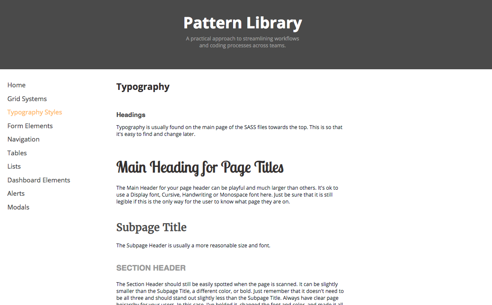
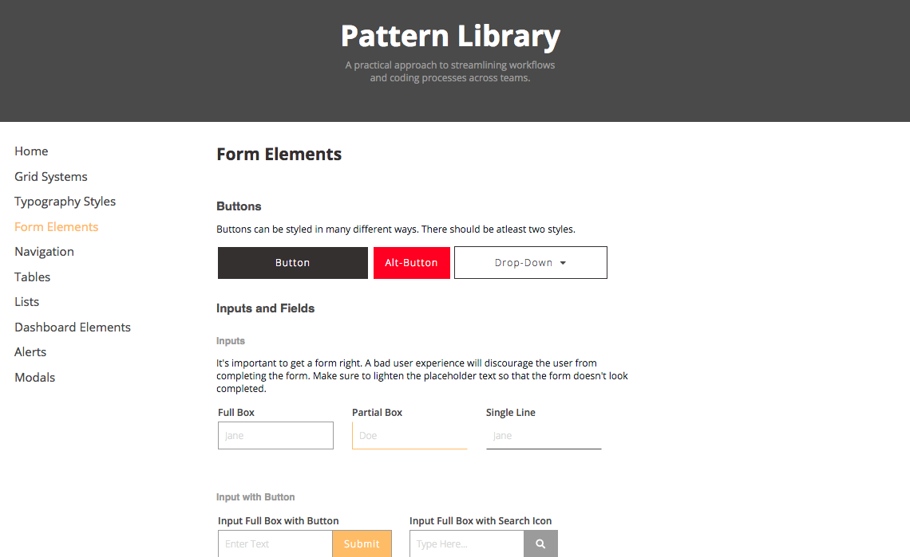
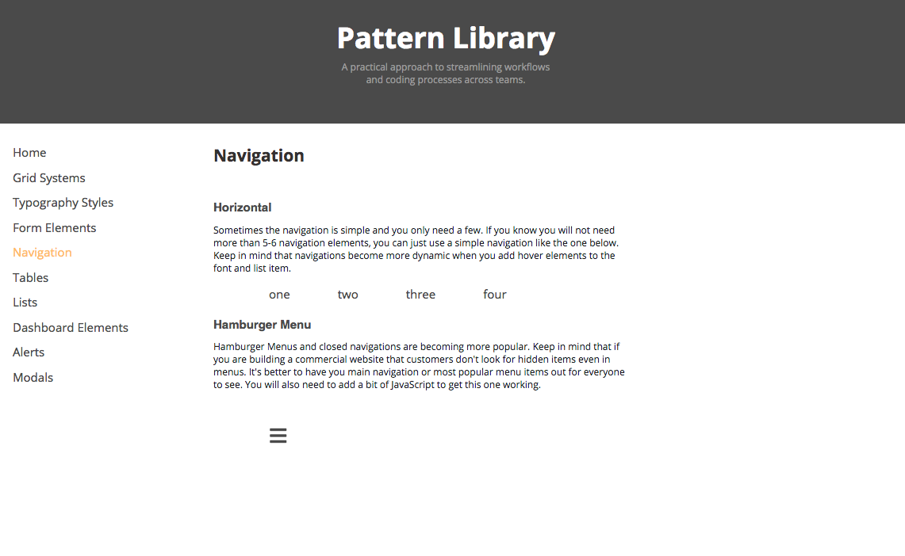
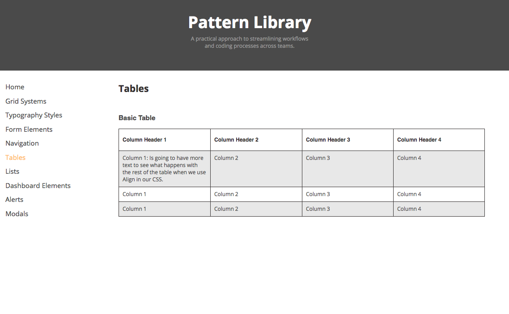
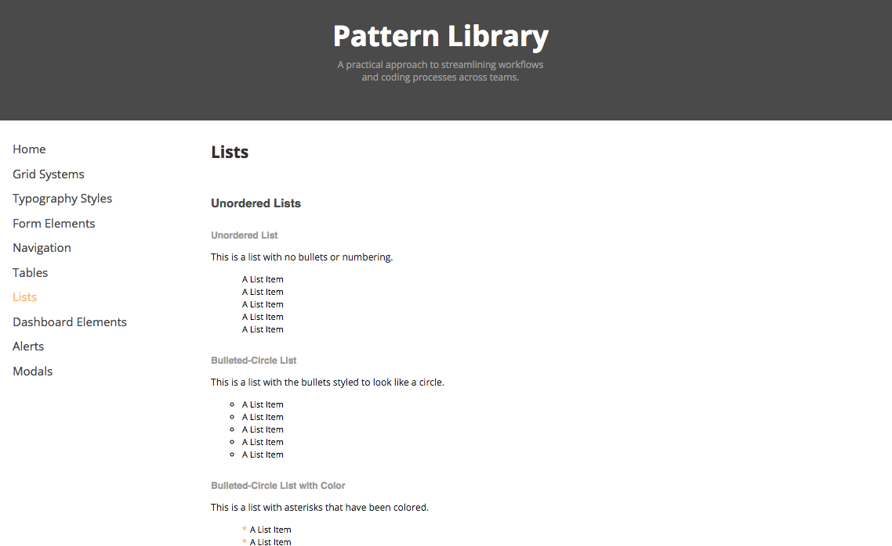
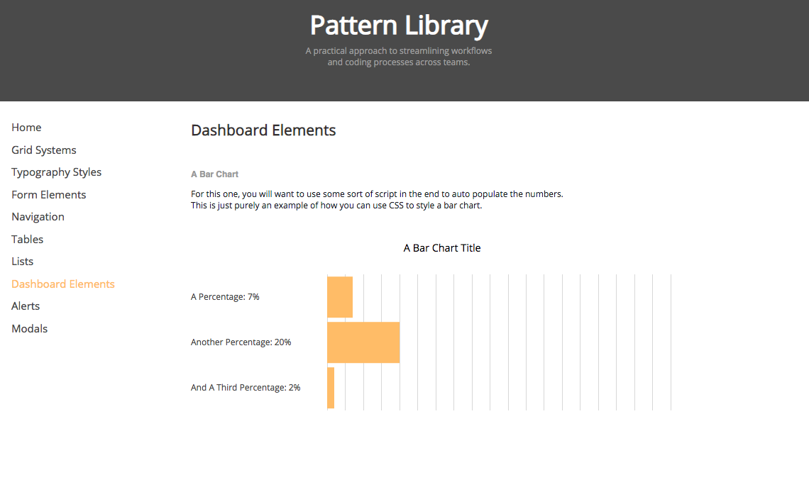
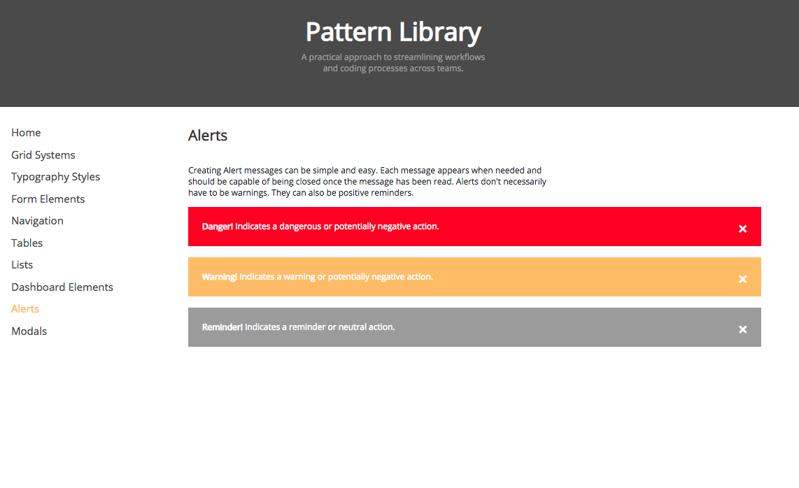
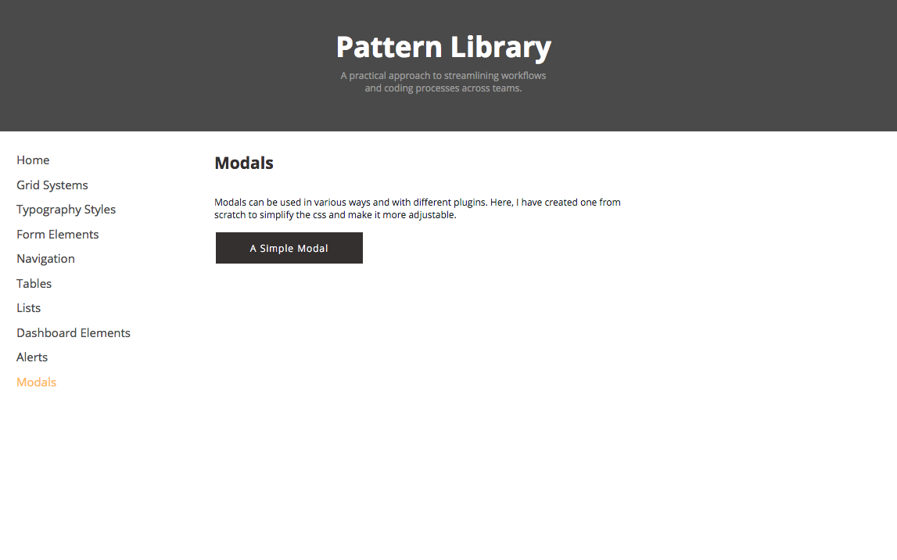
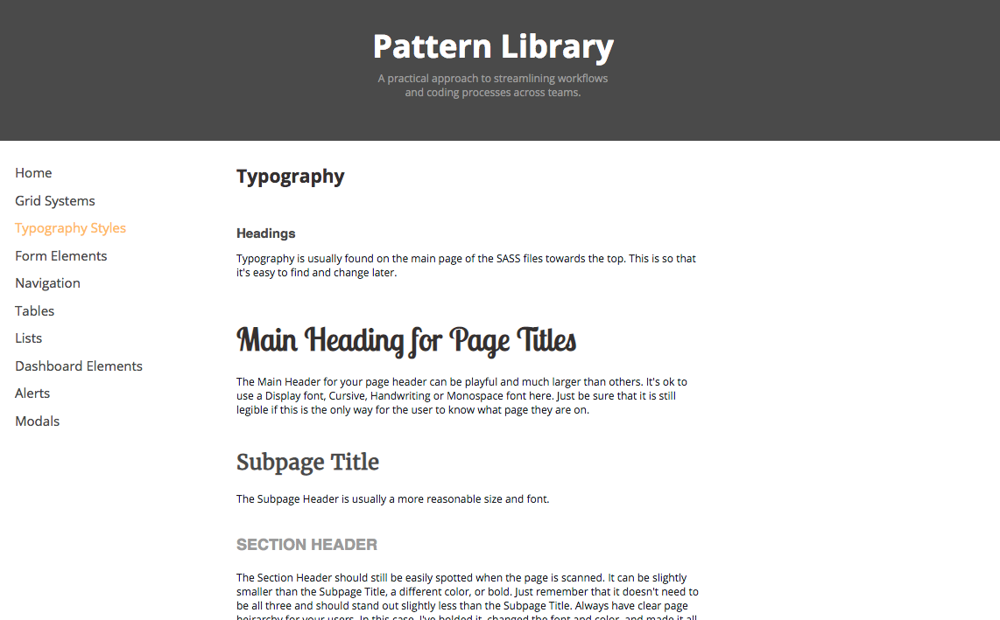
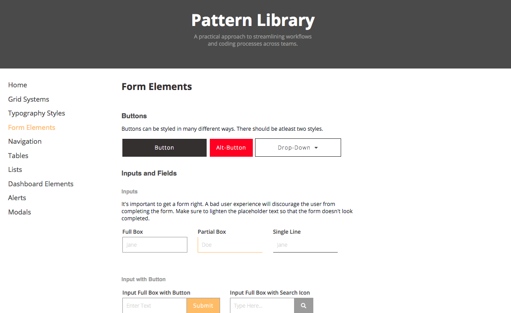
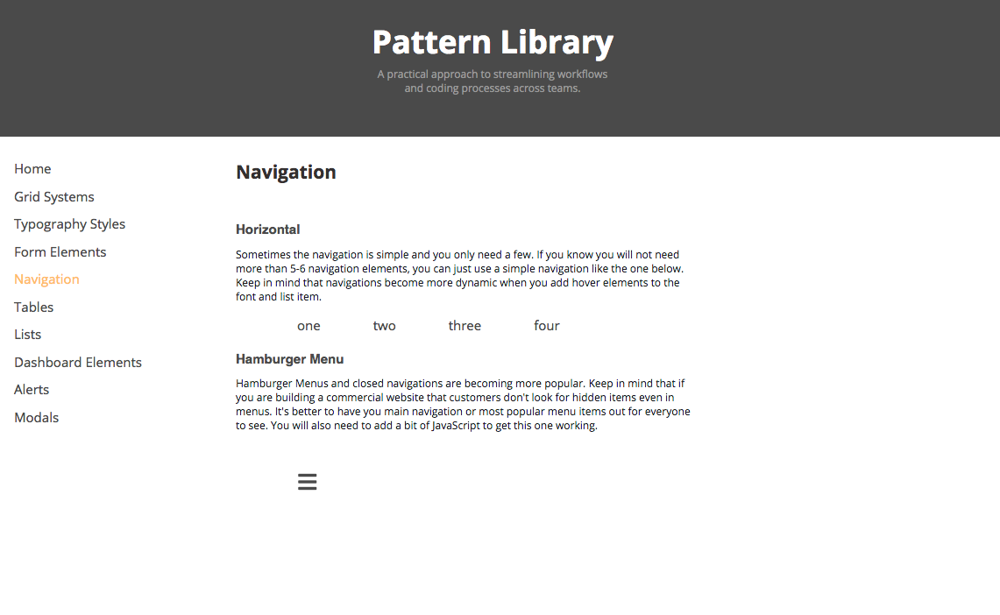
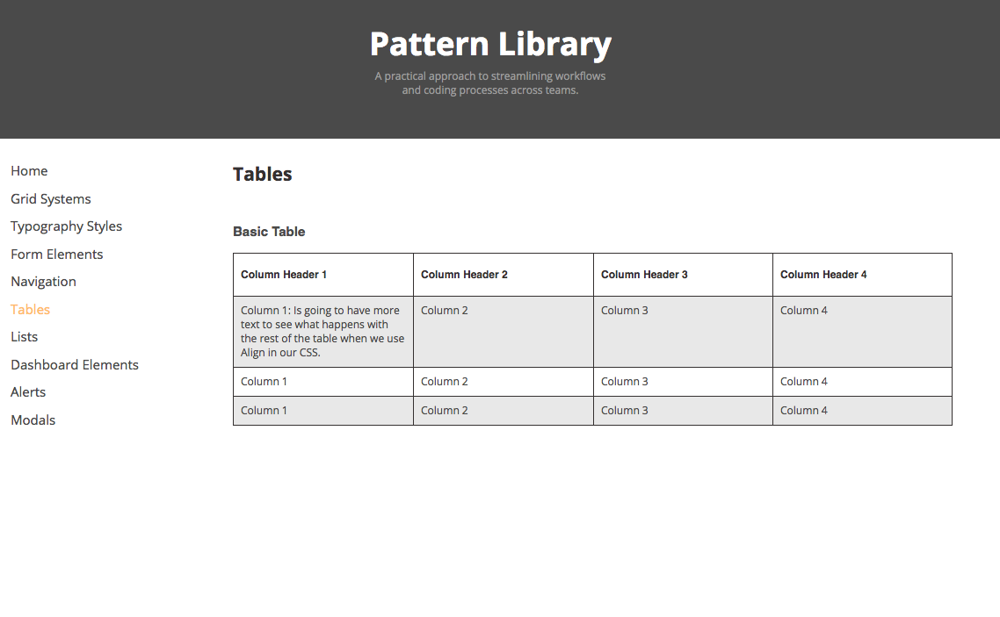
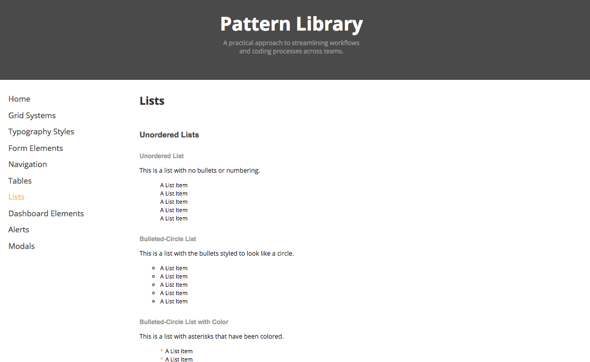
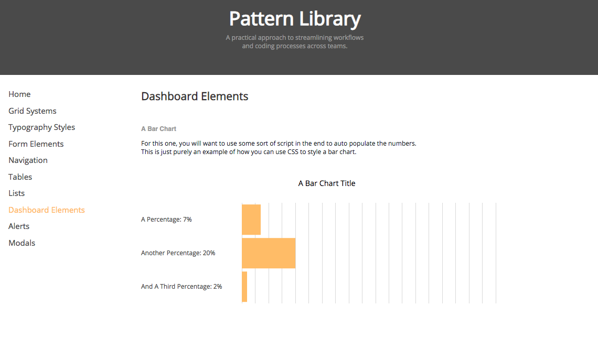
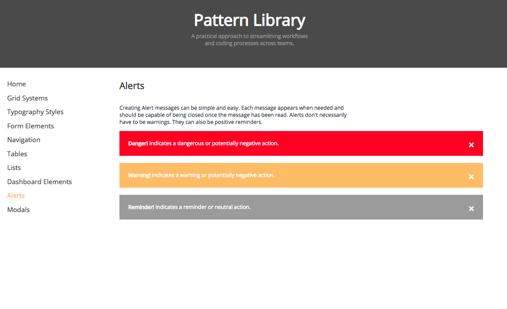
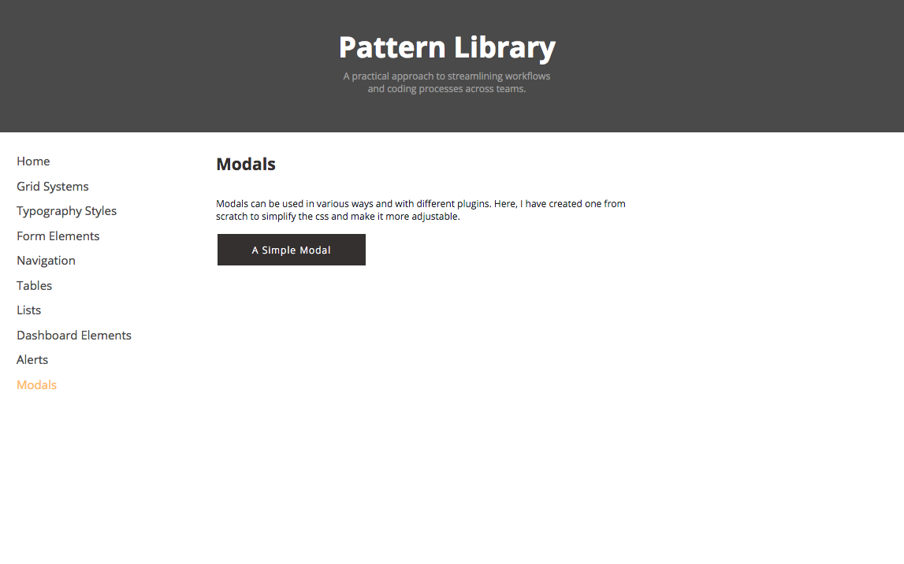